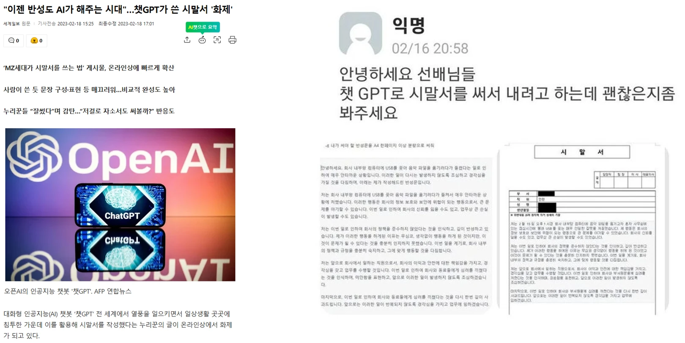
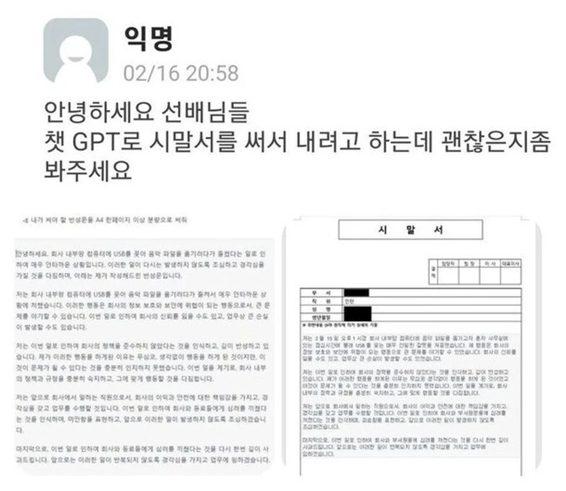
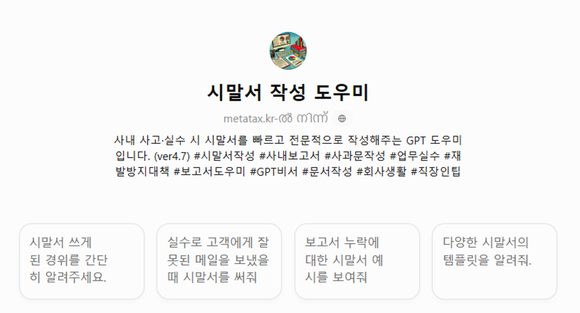
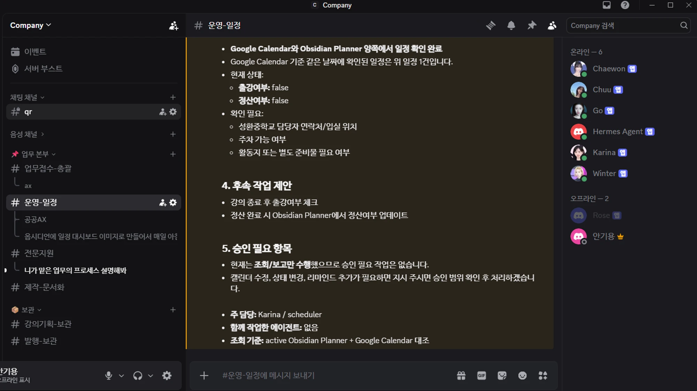
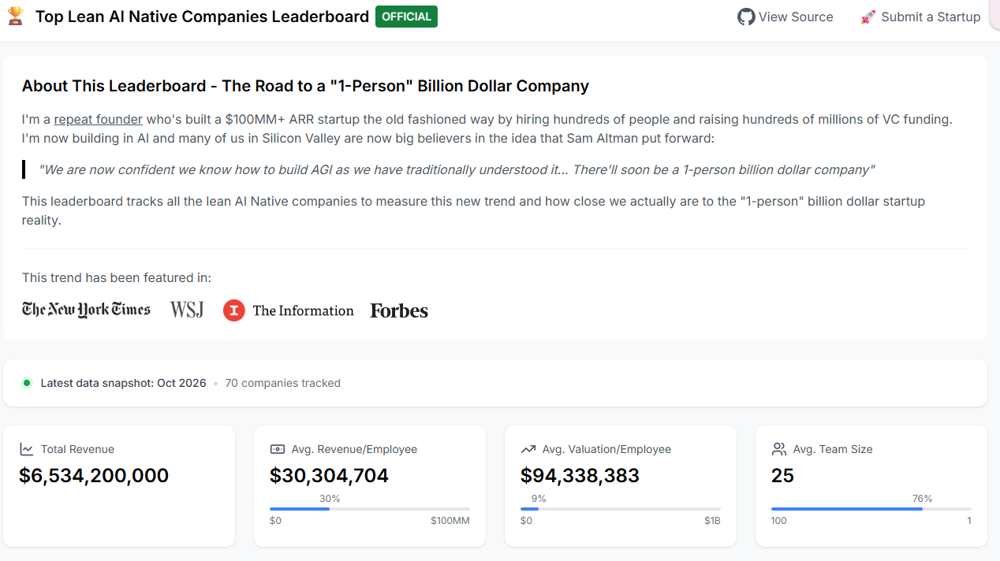
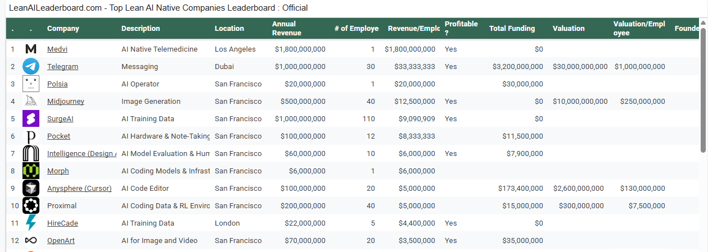
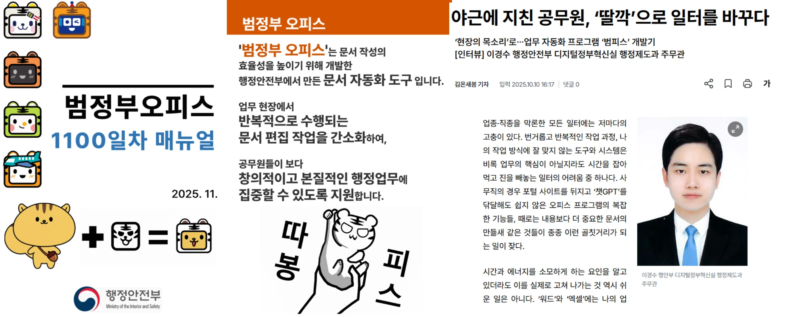

첨부한 빈 보고서 양식 (기관 보고서 양식.hwpx)
기획예산처 AI 활용 특강 · 실습 개정안
AI와 함께하는 업무
문제 찾기부터 정책보고서·인포그래픽까지
조사기획작성시각화
강사소개
#유쾌#공감#핸섬

안기용강사
- (전) 데이터 엔지니어
- (전) DevOps
- (현) 생성형AI 전문 강사
- (현) 대학생 진로 강사
- (현) 팀빌딩 & 레크레이션 강사
- (현) 여친 없음
- (전) 여친 다수
도입
강의 흐름
| 모듈 | 내용 | 방식 | 결과물 |
|---|---|---|---|
| 01 | AI가 바꿔놓은 세상, 바꿔놓을 세상 | 강의·퀴즈·토의 | 관심 문제 1개 |
| 02 | 마크다운 기초 | 설명·실습 | 프롬프트 기본 틀 |
| 03 | 기획 1 · 문제와 보고 목적 정하기 | 설명 + 실습 | 문제 정의 카드 |
| 04 | 작업별 AI 선택·도구 비교 | 시연·비교 | 도구 활용 기준 |
| 05 | 기획 2-① · 규정과 선례 확인하기 | 실습 | 검색 결과표·확인 기록 |
| 06 | 기획 2-②·3 · 목표·대안과 실행 계획 세우기 | 실습 | 판단·출처 기록 기획안 |
| 07 | 작성 1~4 · HWPX 양식과 hwpx-writer 스킬 만들기 | 설명 + 실습 | 빈 HWPX 양식 · hwpx-writer 스킬 |
| 08 | 작성 5 · hwpx-writer로 보고서 작성·최종 검토 | 실습 | 보고서 HWPX |
| 09 | Gemini Notebook 이해하기 | 시연 | 보고서 등록 노트북 |
| 10 | 보고서 요약·인포그래픽 제작하기 | 실습 | 인포그래픽 1장 |
오늘의 도착점
기획은 내가 결정하고, 작성은 스킬이 돕는다
기획 단계마다 '내가 결정한 내용'과 '그렇게 결정한 근거'를 한 문장씩 기록한다
기획 3단계 결정 기록 ①~④
- 1모듈 03문제와 보고 목적
- 2①모듈 05규정·선례 확인
- 2②모듈 06목표·대안 결정
- 3모듈 06실행·평가 계획
사람 문제 정의·근거 해석·결정 · AI 검색·정리·비교·문서화
작성 5단계 → 최종 검토
- 1~2 양식 확인·HWPX 저장
- 3~4 hwpx-writer 스킬 이해·만들기
- 5 hwpx-writer로 보고서 작성
- 사람 완성 파일 최종 검토
모듈 07·08 · Claude
최종 산출물: 판단·출처 기록이 포함된 기획안, HWPX 양식 + hwpx-writer 작성 절차, 완성 보고서 HWPX
01
AI가 바꿔놓은 세상, 바꿔놓을 세상
결과물: 관심 문제 1개
501-1 · AI는 언제부터 있었을까?
퀴즈: AI 연구는 언제 시작됐을까?
AI 연구가 하나의 분야로 출발한 것은 대략 언제일까요?
1
약 4년 전
2
약 10년 전
3
약 30년 전
4
약 70년 전
01-1 · AI는 언제부터 있었을까?
정답 ④ — 1956년, 약 70년 전
다트머스 여름 연구 프로젝트
1956년
- 존 매카시 조직
- AI 연구 분야의 대표적 출발점
- 2026년 기준 약 70년
- 기계가 지능을 흉내 낼 수 있다는 가설
출처: Dartmouth, 「Artificial Intelligence (AI) Coined at Dartmouth」
01-1 · AI는 언제부터 있었을까?
생활 속 AI: 추천·스팸·번역 등
약 80%
Netflix 시청 시간 중 추천 영향 비중
- 2015년 Netflix 연구진 논문
- 무엇을 볼지 고르는 일을 AI가 대행
99.9%
Gmail 스팸·피싱 차단 정확도
- 수신 메일의 50~70%가 스팸
- 2017년 Google 발표
8개언어
Google 번역 신경망 전환 (2016.11)
- 한국어 포함 첫 적용 8개 언어
- 당시 번역 요청의 35% 이상
출처: ACM TMIS 「The Netflix Recommender System」(2015), TechCrunch(2017.5.31), Phone Scoop(2016.11.16)
01-1 · AI는 언제부터 있었을까?
AI 70년: 연구실에서 일상 대화로
- 1956
AI 연구의 출발
- 다트머스 여름 연구 프로젝트
- '지능을 기계로 흉내' 가설
- 2014~16
생성 모델 연구 확산
- 2014 GAN 제안
- 2016 OpenAI 생성 모델 글
- 2016.3
알파고 4:1 승리
- AI 대중화 계기
- 2022.11
ChatGPT 공개
- 대화로 일을 맡기는 방식
- 2개월 만에 월간 1억 명 추정
- 2026
업무 현장으로
- ChatGPT 주간 이용자 9억 명
- 공공 AI 업무환경 확산
생성형 AI = 2022년 이전부터 존재
- 2022.11은 '시작'이 아닌 '대중화'의 계기
달라진 것 = 상호작용 방식
- 메뉴·검색창 → 일상 말로 요청하고 수정 요청
출처: Dartmouth, OpenAI 「Generative models」(2016.6.16), CBC/AP(2016.3.15), GIGAZINE(2022.12.1), TechCrunch(2026.2.27)
01-1 · AI는 언제부터 있었을까?
ChatGPT 이후: 일상 언어로 일을 맡긴다
월간 이용자 1억 명 도달 기간
2개월
- ChatGPT 공개 후 2개월 (2023.1, 추정)
- UBS: 20년간 이만한 확산 속도 없음
100M 도달 기간 (개월)
ChatGPT2
TikTok9
Instagram30
9억명
ChatGPT 주간 이용자
- 2026.2 OpenAI 발표
- 2025.10 8억 → 4개월 +1억
2022.11.30
무료 연구 미리보기로 공개
- 대화형 인터페이스
- 웹에서 바로 사용
대화
후속 질문에 답변
- 오류 인정·전제 지적
- 부적절한 요청 거절
RLHF
사람 피드백 강화학습
- 사람이 평가한 답변으로 조정
- 기술보다 '사용 방식'이 변화
출처: Reuters(Euronews, 2023.2.2·UBS 추정), TechCrunch(2026.2.27), GIGAZINE(2022.12.1, OpenAI 발표 소개)



01-2 · 이미 생긴 변화들
AI 오류의 책임은 제출자에게 돌아온다
호주 정부 보고서 대금
44만AUD
- 237쪽 보고서, 2025년 7월 공개
- 가짜 판결 인용·없는 논문 인용
- 마지막 지급분 반환 (부분 환불)
발견
최대 20건
외부 연구자가 오류 제기
수정
Azure OpenAI
수정본에 생성형 AI 사용 명시
결과
부분 환불
계약 마지막 지급분 반환
출처: AP(CTV News, 2025.10.7), City AM(2025.10) — Deloitte Australia 보고서 사례
01-2 · 이미 생긴 변화들“인간 VS 로봇”
“인간 VS 로봇”
10시간 택배 작업 대결
영상이 끝나면 다음 장으로 넘어갑니다
01-2 · 이미 생긴 변화들
현장도 바뀐다: 분류·이송·포장 로봇
65%
쿠팡 분류 작업 시간 단축
- 분류 로봇 등 수천 대 운영
- 2026.2 보도
40%
롯데글로벌로지스 작업 인력 절감
- 로봇 소터·자율주행 로봇
- 이천 자동화센터
2대
CJ대한통운 휴머노이드 로봇 투입
- 올리브영 물류센터 포장 공정
- 피킹·분류·검수로 확대 계획
사라지는 것은 일자리인가, 작업인가?
출처: 쿠키뉴스(2026.2.15), 머니투데이(2026.9.19) — 수치는 기업 측 설명 기반 보도
01-3 · 앞으로 달라질 업무
어시스턴트와 에이전트의 경계
1 단계
인간 – AI 어시스턴트 협업
AI가 반복적인 업무를 보조해 인간의 효율을 높임
2 단계
인간 – AI 에이전트 협업
에이전트가 팀의 디지털 동료로 합류해, 사람의 지시에 따라 전략 수립 등 구체적인 업무를 수행
3 단계
인간 주도, AI 에이전트 운영
인간이 방향을 제시하면, 에이전트가 전체 업무 흐름을 주도하고 필요시 인간이 개입
01-3 · 앞으로 달라질 업무
실제 사례: 내가 쓰는 AI 에이전트 팀

Discord 서버 하나 = AI 팀
에이전트 봇 7개가 각자 맡은 일을 하고, 나는 지시하고 승인합니다.
예: Karina = 일정 담당(scheduler)
01-3 · 앞으로 달라질 업무
생성형 AI는 삶의 질 도구가 아니라 생산 수단의 혁신


출처: LeanAILeaderboard.com (데이터 기준 2026년 10월)
01-3 · 앞으로 달라질 업무
공공기관에 Brity Works 도입
브리티웍스, 중앙부처 9곳 도입
- 행안부 '온AI' 공식 협업 도구
- 4월 첫 도입 후 8월까지 순차 서비스
Brity Works 도입
9개부처
- 재정경제부·기획예산처
- 국가보훈부·산업통상부
- 고용노동부·금융위원회
- 재외동포청 등
공공 업무에 AI 협업 도구가 들어오고 있다
출처: 삼성SDS 보도 「브리티웍스, 중앙부처 9곳 도입…정부 AI 행정혁신 가속」(2026.8.13)
01-3 · 앞으로 달라질 업무
AI가 초안, 공무원은 검토와 책임 ①
뉴시스 2026.5.17
행안부 공공인공지능혁신과장 인터뷰
- 앞으로는 AI가 보고서 초안을 만들고 공무원은 그걸 검토하는 방식으로 바뀔 것
- 올해가 그 중요한 변곡점
행안부가 말하는 일의 방식
- AI초안 작성
- 공무원검토·수정
- 사람최종 검증·책임
출처: 뉴시스 「'AI가 보고서, 공무원은 검토하는 시대…올해가 변곡점'[인터뷰]」(2026.5.17)
01-3 · 앞으로 달라질 업무
AI가 초안, 공무원은 검토와 책임 ②
행정문서가 AI가 읽기 어려운 포맷 위주
91.1%
HWP·스캔 PDF(OCR 미적용) 등 · 12,946건
10명 중 7명
업무에 생성형 AI 활용
8.9%
AI가 읽을 수 있는 포맷 위주 (TXT·HTML·docx 등)
출처: 토큰포스트·연합뉴스 「AI 쓰는 공무원은 많은데… 보안·교육은 구멍 뚫렸다」(2025.10.13, 위성곤 의원실 공무원 14,208명 설문)
01-4 · 우리는 어떻게 활용할 것인가?
AI는 팀원, 결정과 책임은 팀장
AI (팀원)
- 자료 수집·요약
- 초안·대안 후보 제시
- 비교표·목차 정리
→←
나 (팀장)
- 목적·방향 설정
- 근거 채택·대안 선택
- 최종 결정·책임
49.8%
현장 공무원이 꼽은 최대 우려: 오류 시 책임 소재 불분명
- → 책임이 모호할수록, 결정의 이유를 직접 기록해야 한다
출처: 뉴시스(2026.5.17, 행안부 인터뷰), 뉴시스(2026.4.22, 공노총 설문), 데일리안(2026.1.16, 서울시)
01-4 · 우리는 어떻게 활용할 것인가?
내 전문성이 AI 결과물의 질을 정한다
전문성이 필요한 3지점
질문 설정
- 무엇을 물을지 정한다
근거 선별
- 무엇을 믿을지 고른다
판단 기록
- 왜 선택했는지 남긴다
다음 모듈부터
관심 문제 1개를 정책 보고서의 주제로 선정
- 목적을 정한다
- AI와 자료를 검토한다
- 개선방안을 직접 선택한다
- 보고서 한 건을 완성한다
01-4 · 우리는 어떻게 활용할 것인가?
바이브코딩: 말로 설명하면 AI가 만들어 주는 시대
- 1
말로 설명
- 무엇이 필요한지
- 업무 언어 그대로
- 2
AI가 코드 작성
- 프로그램·자동화
- 화면까지
- 3
실행해 보기
- 결과를 직접 확인
- 4
말로 고치기
- ‘이 부분 바꿔 줘’
- 될 때까지 반복
업무에서
- 반복되는 문서 정리·변환
- 집계표·보고 양식 자동 채우기
- 부서에 맞춘 작은 도구
일상에서
- 가계부·일정 알림
- 모임 안내 페이지
- 나만 쓰는 계산기
누가 만드나
- 코딩을 몰라도
- ‘무엇이 필요한지’ 아는 사람이 만든다
바이브코딩(vibe coding): 2025년 2월 안드레이 카파시(Andrej Karpathy)가 처음 쓴 말
01-4 · 우리는 어떻게 활용할 것인가?
사례: 공무원이 직접 만든 업무 도구 ‘범피스’

범정부 오피스 (범피스)
- 행정안전부에서 만든 문서 자동화 도구
무엇을 줄였나
- 현장에서 반복되는 문서 편집 작업을 간소화
조직에 남긴 것
- 공무원이 창의적이고 본질적인 행정업무에 집중하도록 지원
출처: 행정안전부 「범정부오피스 1100일차 매뉴얼」(2025.11) · 기사 「야근에 지친 공무원, ‘딸깍’으로 일터를 바꾸다」(2025.10.10, 이경수 행정안전부 행정제도과 주무관 인터뷰)
02
마크다운 기초
결과물: 프롬프트 기본 틀
2702 · 마크다운 기초
마크다운이란: 기호가 구조가 된다
원문 (기호가 보이는 상태)
## 요청- 주제: 청년 지원사업 안내- 작업: 목차 5개 제안 | 기준 | 후보 A ||---|---|| 시급성 | ○ |
화면에 보이는 모습
요청
- 주제: 청년 지원사업 안내
- 작업: 목차 5개 제안
| 기준 | 후보 A |
|---|---|
| 시급성 | ○ |
AI는 이 기호를 '구조 신호'로 읽는다
02 · 마크다운 기초
6가지 문법만 알면 된다
| 문법 | 쓰는 방법 | 앞으로 쓰이는 곳 |
|---|---|---|
| 제목 | ## 제목 · ### 소제목 | 요청 내용 구분 (상황·요청·형식) |
| 목록 | - 항목 · 1. 항목 | 조건·규칙 나열, 순서가 있는 단계 |
| 강조 | **굵게** | 꼭 지킬 규칙 표시 |
| 표 | | 열1 | 열2 | + |---|---| 구분선 | 비교표, 근거 정리표, 추진계획 |
| 코드 블록 | 앞뒤에 ``` (백틱 3개) | 붙여 넣는 자료와 지시문의 경계 |
| 구분선·인용 | --- · > 인용 | 자료 구분, 원문 인용 표시 |
제외: 링크 · 이미지 · 코드 문법 — 오늘 실습에 쓰지 않는다
02 · 마크다운 기초
줄글 vs 구조화 프롬프트
줄글
청년 지원사업 신청 안내 개선 주제로 보고서 목차 5개 만들어주고 표로 하고 개조식으로 근거 필요하면 표시해줘
구조화 (마크다운)
## 요청 - 주제: 청년 지원사업 신청 안내 개선 - 작업: 보고서 목차 5개 제안 ## 형식 - 표 (목차 / 핵심 내용 / 필요한 근거) - 개조식 ## 규칙 - 근거가 없으면 '확인 필요'로 표시
지시·형식·규칙이 분리되어 보인다
고칠 부분을 찾기 쉽다
AI가 구조를 파악하기 쉽다
02 · 마크다운 기초
미니 실습 4개
제목 · 목록
1
요청을 ## 제목 3개(상황·요청·형식)로 나눠 쓰기
표
2
비교 기준 3개 × 후보 2개 표를 직접 만들기
코드 블록
3
보도자료 한 단락을 코드 블록으로 감싸 붙이고 '아래 자료만 근거로 3줄 요약' 요청
표 출력
4
AI에게 '답변을 마크다운 표로 줘'라고 요청하고, 복사해 표가 유지되는지 확인
실습 3용 자료 (실습을 위해 만든 가상 보도자료)
○○시는 청년 지원사업 신청 안내문을 내년부터 한 장 요약본으로 바꾼다고 밝혔다. 신청 조건이 복잡해 같은 문의가 반복된다는 의견을 반영한 조치다. 시는 요약본을 먼저 두 개 사업에 시범 적용한 뒤, 문의 건수 변화를 확인해 다른 사업으로 넓힐 계획이다.
02 · 마크다운 기초
프롬프트 공식: 네 칸으로 쓴다
1
자료
- AI에게 주는 내 문제, 근거, 이전 결과
2
요청
- AI가 할 일
3
출력 형식
- 표의 열, 문체 등 결과의 모양
4
규칙·기타
- 빈칸은 먼저 질문, 근거 없으면 '확인 필요', 그 밖의 추가사항
오늘은 3단계로 익힙니다
- 1
빈칸 채우기
- 네 칸 문장을 제공, 내 내용만 입력
- 2
칸 채우기
- 칸 이름과 힌트를 보고 네 칸을 직접 작성
- 3
직접 설계
- 목표만 보고 처음부터 작성, 작성 후 점검
실습 방식
보고서 작성 프로세스
필수
공통 규칙
대화 시작 때 한 번 입력필수
1. 문제와 목적 정리
1234
선택
2-①. 규정과 선례 확인
567
필수
2-②. 목표와 해결방안 설계
8910
선택
3. 실행과 평가 계획
작성1112131415점검16171819
필수
기획안 초안 작성
20
03
공통 규칙 입력
결과물: AI 작업 원칙 설정
34공통 규칙 · 필수
보고서 흐름규칙12-①2-②3초안작성검토
공통 규칙: 대화 시작 때 한 번
너는 내가 보고서를 준비하는 과정에서 사용하는 보조 도구다.
- 1요청 범위 준수 사용자가 요청한 범위 내에서 충실히 작업하되, 요청에 포함된 하위 항목(예: 분석 + 후보 추천 등)은 생략 없이 함께 수행한다.
- 2단계별 진행 명시적인 다음 단계나 최종 해결책으로 미리 건너뛰지 않고, 현재 단계의 과제에 집중한다.
- 3사용자 결정권 존중 문제 정의, 목표, 대안 선택, 최종 계획 등 주요 의사결정은 사용자가 직접 판단할 수 있도록 선택지나 참고 자료 형태로 지원한다.
- 4확정 내용 구분 사용자가 확정했다고 명시한 사항만 사실 및 전제로 취급한다.
- 5객관성 유지 사용자의 경험이나 주장을 다룰 때는 '관찰/주장'임을 명확히 구별하여 표현한다.
- 6추정 지양 확인되지 않은 사실, 수치, 출처는 자의적으로 메우지 않고 미확인 상태임을 밝힌다.
- 7필요시 정보 확인 작업 수행 중 필수적인 입력이나 명확한 방향 설정이 부족할 경우 핵심 질문을 전달한다.
- 8자료조사 연계 검색 및 외부 자료 조사는 사용자가 요청하거나 동의한 범위 내에서 수행한다.
- 9누적 정리 같은 대화의 모든 답변 끝에 지금까지 정리된 사항을 아래 '보고서 준비 현황표'로 이어서 보여준다. '~만 출력해줘'라고 요청한 작업에서도 현황표는 함께 보여주고, 이번 답변에서 새로 채우거나 바뀐 칸은 ★로 표시한다. 내가 확정했다고 말한 내용만 '확정'으로 적는다.
한 번만 입력
- 대화를 시작할 때 맨 처음 입력
- 같은 대화창에서 ① 작업부터 이어 갑니다
- 새 대화를 열면 다시 입력
다섯 묶음
- 작업 범위1·2요청한 것은 빠짐없이, 다음 단계는 미리 하지 않는다
- 결정은 나3·4AI는 선택지·자료로 돕고, 확정은 사용자
- 사실 지키기5·6관찰·주장은 구별하고, 미확인은 미확인으로
- 질문·조사7·8부족하면 핵심 질문, 조사는 요청·동의 범위에서
- 이어 보기9답변마다 현황표로 지금까지를 다시 보여 준다
공통 규칙 · 필수
보고서 흐름규칙12-①2-②3초안작성검토
한 채팅에서 이어지는 보고서 준비 현황표
| 항목 | 내용 요약 | 상태 |
|---|---|---|
| 문제의식 | ★안내문이 어려워 반복 질문 (내 관찰)안내문이 어려워 반복 질문 (내 관찰)안내문이 어려워 반복 질문 (내 관찰) | 미확인미확인미확인 |
| 핵심 문제 | ★후보 3가지★신청서 작성 안내 탓 보완요청 반복신청서 작성 안내 탓 보완요청 반복 | 후보확정확정 |
| 대상·범위 | ★개인 첫 신청 · 접수 단계개인 첫 신청 · 접수 단계 | 미정확정확정 |
| 보고 목적 | ★과장 보고 · 시범운영 여부 결정 | 미정미정확정 |
| 규정·선례 | 미정미정미정 | |
| 목표 | 미정미정미정 | |
| 선택한 대안 | 미정미정미정 | |
| 실행·평가 계획 | 미정미정미정 | |
| 확인 필요 사항 | ★반복 질문 건수 자료 없음반복 질문 건수 자료 없음반복 질문 건수 자료 없음 | 미확인미확인미확인 |
- ① 문제의식 정리 뒤
- ③ 핵심 문제 정리 뒤
- ④ 보고 목적 정리 뒤
왜 현황표인가
- 한 채팅에서 이어 가므로, 지금까지 무엇이 확정됐는지 매번 눈으로 확인
- ★ = 이번 답변에서 바뀐 칸
- 확정은 내가 말한 것만
가상 예시 · 실제 표에는 ‘근거·출처’ 열도 함께 나옵니다.
04
문제와 목적 정리
결과물: 문제 정의 한 문장, 보고 목적 한 문장
371. 문제와 목적 정리 · 필수
보고서 흐름규칙12-①2-②3초안작성검토
예시: 한 작업씩 멈추는 모습
내 입력: “안내문이 어려워서 민원인이 반복 질문하는 것 같다”
1정리
‘원인에 대한 해석’으로 분류 + 문제 후보 3가지
멈춤 · 내가 고름2질문
“그렇게 판단한 사례나 자료가 있습니까?”
멈춤 · 내 답 기다림3정리
내가 고른 문제만 한 문장으로
멈춤AI는 후보만 내고, 문제를 고르고 확정하는 것은 내가 합니다. ②에서 문제 정의까지 쓰게 하지 않습니다.
1. 문제와 목적 정리 · 필수
보고서 흐름규칙12-①2-②3초안작성검토
① 문제의식 정리
프롬프트 ①
아래 내용을 분류하고, 핵심 문제 파악을 도와줘.[내 경험·관찰·생각] 내 경험·관찰·생각결과는 다음 표 하나로 작성해줘. 입력 내용 / 사실에 관한 진술·해석·미확인 중 구분 / 제공된 근거 또는 확인 상태내가 관찰했다고 적은 내용과 자료로 확인된 사실을 구분해줘. 구분된 내용을 바탕으로 내가 가지고 있는 핵심 문제 후보 3가지 추천해줘.
결과물분류표 + 핵심 문제 후보 3가지
AI가 하지 않는 것해결방안 제안·문제 최종 선택
그다음내가 확인하고 판단한 뒤 다음 작업
후보 중 어느 것을 고를지는 내가 정합니다. 고른 문제는 ③에서 한 문장으로 정리합니다.
1. 문제와 목적 정리 · 필수
보고서 흐름규칙12-①2-②3초안작성검토
② 부족한 정보 질문
프롬프트 ②
앞서 정리한 내용을 바탕으로, 핵심 문제와 보고 목적을 정하는 데 필요한 질문 하나만 해줘.내가 이미 제공한 정보는 다시 묻지 마. 질문에 대한 답이나 판단을 대신 제시하지 말고, 내 답변을 기다려줘.
결과물질문 하나
AI가 하지 않는 것답이나 판단을 대신 제시
그다음내가 확인하고 판단한 뒤 다음 작업
필요하면 이 작업을 반복합니다. 질문과 함께 문제 정의까지 작성하게 하지 않습니다.
1. 문제와 목적 정리 · 필수
보고서 흐름규칙12-①2-②3초안작성검토
③ 내가 선택한 핵심 문제 정리
프롬프트 ③
내가 선택한 핵심 문제를 한 문장으로 정리해줘.[내가 선택한 문제] 내가 선택한 문제[반드시 유지할 대상과 범위] 반드시 유지할 대상과 범위내 선택의 의미와 범위를 유지해줘. 확인되지 않은 원인이나 문제의 규모는 덧붙이지 마. 결과는 문제 정의 한 문장만 출력해줘.
결과물문제 정의 한 문장
AI가 하지 않는 것확인되지 않은 원인·규모 덧붙이기
그다음내가 확인하고 판단한 뒤 다음 작업
반드시 유지할 대상과 범위 = AI가 넓히면 안 되는 경계입니다. 누구(문제를 겪는 사람)·어느 단계(절차 중 어디)·뺄 것만 짧게 적습니다. 원인이나 수치는 적지 않습니다.
1. 문제와 목적 정리 · 필수
보고서 흐름규칙12-①2-②3초안작성검토
④ 내가 정한 보고 목적 정리
프롬프트 ④
내가 정한 보고 목적을 한 문장으로 정리해줘.[보고받는 사람] 보고받는 사람[이번 보고를 통해 결정하거나 확인하려는 것] 이번 보고를 통해 결정하거나 확인하려는 것내가 적지 않은 결정이나 추진 방향을 추가하지 마. 결과는 보고 목적 한 문장만 출력해줘.
결과물보고 목적 한 문장
AI가 하지 않는 것적지 않은 결정·추진 방향 추가
그다음내가 확인하고 판단한 뒤 다음 작업
05
규정과 선례 확인
결과물: 규정·선례 검색 결과표, 원문 확인 기록표
432-①. 규정과 선례 확인 · 선택
보고서 흐름규칙12-①2-②3초안작성검토
2-① 진행 순서: 필요한 작업 고르기
AI 검색
5관련 규정 조사규정 검색 결과표
6관련 선례 조사선례 검색 결과표
→
내가 직접
원문을 직접 읽고 확인 기록 작성
→
AI 정리
7내 원문 확인 기록 정리사용자 확인 기록표
2-①. 규정과 선례 확인 · 선택
보고서 흐름규칙12-①2-②3초안작성검토
⑤ 관련 규정 조사
프롬프트 ⑤
아래 범위에 해당하는 관련 규정을 공식 원문에서 찾아 검색 결과표로 정리해줘.[조사할 업무·쟁점] 조사할 업무·쟁점[적용 대상·지역·확인 기준일] 적용 대상·지역·확인 기준일표 항목: 규정명 / 법령·행정규칙·지침 등 구분 / 소관·발행기관 / 시행·적용일 / 관련 조문·쪽 / 관련 내용 요약 / 원문 링크 / 원문 확인 여부원문을 열어 확인하지 못한 자료는 미확인으로 표시해줘. 우리 업무에 적용되는지는 내가 판단하겠다. 결과는 규정 검색 결과표만 출력해줘.
결과물규정 검색 결과표
AI가 하지 않는 것우리 업무에 적용되는지 판단
그다음내가 확인하고 판단한 뒤 다음 작업
검색을 요청하는 작업입니다. 공통 규칙 8에 따라 조사는 내가 요청하거나 동의한 범위에서만 합니다.
2-①. 규정과 선례 확인 · 선택
보고서 흐름규칙12-①2-②3초안작성검토
⑥ 관련 선례 조사
프롬프트 ⑥
아래 조건과 관련된 행정선례·다른 기관의 실행 사례를 기관 공식 자료에서 찾아 표로 정리해줘.[찾고 싶은 사례] 찾고 싶은 사례[비교에 필요한 조건] 비교에 필요한 조건표 항목: 기관·자료명 / 게시·발행일 / 사례의 대상·조건 / 추진 내용 / 자료에서 확인되는 성과 / 확인 위치 / 원문 링크도입 사실과 측정된 성과를 구분해줘. 성과 수치가 없으면 확인되지 않았다고 적어줘. 결과는 선례 검색 결과표만 출력해줘.
결과물선례 검색 결과표
AI가 하지 않는 것도입 사실과 측정된 성과 섞기
그다음내가 확인하고 판단한 뒤 다음 작업
2-①. 규정과 선례 확인 · 선택
보고서 흐름규칙12-①2-②3초안작성검토
⑦ 내 원문 확인 기록 정리
이 작업 전에 원문을 직접 읽고 아래 기록을 작성합니다.
프롬프트 ⑦
아래는 내가 원문을 직접 확인하고 작성한 기록이다. 내 기록을 표로 정리하는 작업만 해줘.자료명 또는 자료 ID: 자료명 또는 자료 ID 직접 확인한 조문·쪽·대목: 직접 확인한 조문·쪽·대목 내 업무에 적용할 내용: 내 업무에 적용할 내용 적용한다고 판단한 이유: 적용한다고 판단한 이유 적용할 때의 한계: 적용할 때의 한계 채택·참고·제외 중 내 선택: 채택·참고·제외 중 내 선택 추가 확인할 사항: 추가 확인할 사항내 판단을 보충하거나 바꾸지 마. 작성하지 않은 항목은 미입력으로 남겨줘. 결과는 사용자 확인 기록표만 출력해줘.
결과물사용자 확인 기록표
AI가 하지 않는 것내 판단 보충·변경
그다음내가 확인하고 판단한 뒤 다음 작업
06
작업별 AI 선택·도구 비교
결과물: 도구 활용 기준
48국내외 사용 현황
얼마나 많이, 얼마나 빠르게 쓰고 있나
4904 · 도구 비교
국내 1위 ChatGPT, Gemini·Claude도 역대 최대
국내 ChatGPT 앱 월간 사용자
2,470만 명
- 국내 생성형 AI 앱 1위
- 상위 3개 앱 모두 역대 최대
국내 월간 사용자 수 (만 명)
ChatGPT2,470
Gemini987
Claude404
987만 명
Gemini · 국내 2위
- ChatGPT의 약 40% 규모
- 역대 최대 사용자
404만 명
Claude · 국내 3위
- ChatGPT의 약 16% 규모
- 역대 최대 사용자
3,075만 명
상위 10개 AI 앱 사용자
- 중복 제외, 전년 대비 +19%
- 코파일럿 196만·그록 129만
- 퍼플렉시티 129만·에이닷 110만
46억분
상위 10개 앱 총 사용시간
- 2025.9 28억 분 → 2026.9 46억 분
- 1년 새 +64%, 역대 최대
출처: 와이즈앱·리테일 조사(국내 안드로이드·iOS 표본), 바이라인네트워크 「챗GPT, 9월 국내 이용자 2470만명…제미나이·클로드 역대 최대」(2026.10)
04 · 도구 비교
사용자는 ChatGPT, 성장 속도는 Claude
841%
Claude 사용자 성장률
- 전년 동기 대비
484.5%
Gemini 사용자 성장률
- 전년 동기 대비
92.1%
ChatGPT 월간 재방문율
- 10명 중 9명 다시 사용
20.8억
6월 AI 앱 실행횟수(회)
- 2년 전 대비 약 13배
월평균 사용자 (2026년 4~6월, 만 명)
ChatGPT2,362
Gemini895
Claude298
퍼플렉시티173
월간 재방문율
ChatGPT92.1%
Claude73.0%
퍼플렉시티63.8%
그록 AI59.5%
한 번 쓰면 다시 찾는 비율
출처: 와이즈앱·리테일 「26년 6월 생성형 AI 동향」, AI매터스 보도(2026.7) · 성장률은 2025년 4~6월 대비 2026년 같은 기간 월평균 사용자 기준
04 · 도구 비교
세계도 ChatGPT 중심, 점유율은 50% 아래로
2026년 5월 · 글로벌 AI 비서 시장 점유율
46% ChatGPT
- 처음으로 50% 아래
- Gemini·Claude가 점유율 확대
점유율
ChatGPT46%
Gemini28%
Claude10%
71%
AI 비서 이용시간 중 ChatGPT 비중
- ChatGPT 71%
- Gemini 14%
12억명+
ChatGPT 주간 이용자
- 2026년 10월 OpenAI 발표
9억명+
Gemini 앱 월간 이용자
- 2026년 5월 구글 I/O 발표
출처: 센서타워 「State of AI Report 2026」, 이데일리 보도(2026.6.20) · OpenAI 「GPT-6 and Intelligent UI for everyone」(2026.10.7) · 구글 I/O 2026 발표(2026.5)
세 AI의 강점
대중형 · 업무형 · 크리에이터형
5304 · 도구 비교
대중형 · 업무형 · 크리에이터형, 성격이 다르다
ChatGPT
대중형 · 만능형
- 생활 질문·검색
- 음성 대화 (GPT-Live)
- 답변이 도구로 (GPT-6)
- 2.9%: 주중·주말 이용량 차이
- 2024년 초 8% → 생활 AI화
Claude
업무형 · 개발형
- 보고서·장문 글쓰기
- 긴 문서·계약서 분석
- 코딩·업무 자동화
- LG CNS·네이버: 국내 기업 업무 도입
- 넥슨·채널코퍼레이션 등
Gemini
크리에이터형 · 구글형
- 지메일·드라이브 연동
- 이미지·영상 생성
- 자료 기반 정리 (노트북LM)
- 3.1배: Canva 이용자의 사용 확률
- CapCut 이용자 2.4배
출처: 센서타워 「State of AI Report 2026」, 이데일리 보도(2026.6.20) · 비교 리뷰 종합(Codigital, AI Weekly 등 2026) · OpenAI 릴리스 노트(2026.10)
04 · 도구 비교
ChatGPT: 묻고, 말하고, 계산까지 하는 만능형
12억명+
ChatGPT 주간 이용자 (2026.10)
- Intelligent UI 예시 화면 (이해용 그림)
- 요청: 4명 저녁값 나눠줘
- 더치페이 계산기: 총액 입력, 인원 4명, 1인당 자동 계산
- 숫자만 바꾸면 바로 다시 계산
GPT-6
Intelligent UI (2026.10.7)
- 답변에 버튼·차트·입력폼
- 무료는 GPT-6 Luna 적용
GPT-Live
음성 대화 (2026.10.15)
- 사람처럼 자연스러운 대화
- 한국어 새 목소리 추가
Work
에이전트 · 슬라이드 제작
- 길고 복잡한 작업 대행
- 대화 속 슬라이드 제작
2.9%
주중·주말 이용량 차이
- 2024년 초 8%
- 2026년 1Q 2.9%
- 주말에도 쓰는 생활 AI
출처: OpenAI 「GPT-6 and Intelligent UI for everyone」(2026.10.7), ChatGPT 릴리스 노트(2026.10) · 센서타워 보고서, 이데일리(2026.6.20) · 예시 화면은 이해를 돕기 위한 그림
04 · 도구 비교
Claude: 긴 글·문서·코딩, 일을 맡기는 업무형
코워크(Cowork) · 내 컴퓨터 파일로 일하는 데스크톱 에이전트 (유료 플랜)
- 1
폴더 지정
- 작업할 폴더만 허용
- 2
계획 수립
- 할 일 순서 자동 정리
- 3
파일 읽기·작성
- 문서·표 직접 생성
- 4
결과 확인
- 중요 작업 전 확인 요청
긴 글 쓰기
- 자연스러운 문장 평가
- 보고서 어조 유지
긴 문서 분석
- 수백 쪽 한 번에 읽기
- 특정 내용 정확히 찾기
코딩
- 복잡한 코드 평가 높음
- Claude Code 제공
국내 기업 도입 사례
- LG CNS: 임직원 수천 명
- 네이버: 전 개발 조직
- 넥슨: 게임 코드 검토
- 채널코퍼레이션: 고객 상담 AI
출처: Anthropic 코워크 소개 자료 종합(go9x, createwith 2026) · 이데일리, 앤트로픽 서울 오피스 간담회 보도(2026.6.20) · 비교 리뷰 종합(Codigital, AI Weekly 2026)
04 · 도구 비교
Gemini: 구글 연동·이미지·영상에 강한 창작형
Gemini 연결 허브 구글 서비스 창작·정리 도구
3.1배
Canva 이용자의 Gemini 사용 확률
- Canva 3.1배
- CapCut 2.4배
- 일반 기준
9억명+
Gemini 앱 월간 이용자
- 2026년 5월 구글 I/O 발표
Gemini 4 Argon
- 새 최상위 모델 정식 출시
- 2026.10.13 · AI Pro·Ultra 구독자
출처: 센서타워 보고서, 이데일리(2026.6.20) · 구글 I/O 2026 발표(2026.5) · GIGAZINE·라이브도어 「Gemini 4 Argon 정식 릴리스」(2026.10) · 제미나이 활용서 소개(교보문고 2026)
무료·유료 요금 비교
어디까지 무료, 언제 유료로
5804 · 도구 비교
표준 유료 요금제는 셋 다 월 약 20달러
| 구분 | ChatGPT | Claude | Gemini |
|---|---|---|---|
| 무료 | Free $0 / GPT-6 Luna · 일부 국가 광고 | Free $0 / 일일 사용 한도 | 무료 $0 / 구글 계정으로 시작 |
| 저가형 | Go 약 $8 / 광고 포함 가능 | 없음 | AI Plus 11,000원 / 한국 · 저장공간 200GB |
| 표준 | Plus $20 / GPT-6 Sol 사용 | Pro $20 / 연간 결제 시 월 약 $17 | AI Pro $19.99 / 한국 월 29,000원 |
| 고급 | Pro $100·200·500 / Plus 대비 사용량 확대 | Max $100·200 / Pro 대비 5배·20배 | AI Ultra $100·200 / 신규 $100 = Pro 5배 |
표준 요금제 (월)
$20
세 서비스 공통 수준
이렇게 시작하기
- 무료로 시작: 2~3개 비교 사용
- 한도 자주 걸리면: 그 AI만 표준 요금제
- 매일 종일 쓰면: 고급 요금제 검토
출처: OpenAI 릴리스 노트(2026.9~10), nocode.mba(2026.10.8) · ai-toolbox(2026.7), grey.co · 구글 코리아 블로그(2026.1.27), AI매터스(2026.5), 오픈위키(2026.10.5) · 부가세·환율·결제 경로에 따라 실제 금액 상이
상황별 추천 AI
일상 · 업무 · 자료조사 · 창작
6004 · 도구 비교
일상·문서·구글 작업, 편한 AI가 다르다
| 구분 | 작업 | 추천 | 이유 |
|---|---|---|---|
| 일상 | 생활 질문·아이디어 | ChatGPT | 주말에도 쓰는 생활 AI / 무료도 최신 GPT-6 |
| 일상 | 음성 대화·외국어 연습 | ChatGPT | 끊김 없는 GPT-Live / 한국어 목소리 추가 |
| 일상 | 즉석 계산·비교표 | ChatGPT | 답변이 계산기·차트로 / 숫자만 바꿔 바로 확인 |
| 업무 | 보고서·기획서 쓰기 | Claude | 자연스러운 문장 평가 / 긴 원고 어조 유지 |
| 업무 | 긴 PDF·계약서 분석 | Claude · Gemini | 수백 쪽 한 번에 읽기 / 특정 내용 정확히 찾기 |
| 업무 | 지메일·구글 문서 작업 | Gemini | 메일·드라이브 바로 연결 / 자료 옮길 필요 없음 |
| 업무 | 파일 정리·업무 자동화 | Claude 코워크 · Work | 내 폴더 파일 직접 처리 / 여러 단계 알아서 진행 |
| 업무 | 코딩 | Claude · Codex | 복잡한 코드 평가 높음 / 네이버·넥슨 현장 도입 |
출처: 복수 비교 리뷰 종합(Codigital, AI Weekly, Roo 2026) 및 OpenAI·Anthropic·Google 공식 기능 자료 · 공식 순위 아님
04 · 도구 비교
검색·이미지·영상은 Gemini, 깊은 조사는 셋 다
| 구분 | 작업 | 추천 | 이유 |
|---|---|---|---|
| 자료조사 | 최신 정보 실시간 검색 | Gemini | 구글 검색과 연결 / 뉴스·가격·장소 정보 |
| 자료조사 | 내 자료로 요약·정리 | Gemini 노트북LM | 올린 자료만 근거로 답변 / 한국어 팟캐스트·보고서 |
| 자료조사 | 심층 리서치 보고서 | ChatGPT · Claude · Gemini | 웹페이지 수십 개 자동 탐색 / 출처 포함 보고서 (유료 중심) |
| 창작 | 이미지 생성·편집 | Gemini 나노바나나 · ChatGPT | 말로 사진 일부 수정·합성 / 대화하며 이미지 다듬기 |
| 창작 | 영상 생성 | Gemini Omni · Flow | 문장만으로 음성 포함 영상 / Flow로 장면 이어 붙이기 |
TIP
같은 질문을 2~3개 AI에
- 무료 버전으로 결과 비교
- 잘 맞는 AI를 작업별로 고정
출처: 복수 비교 리뷰 종합(Codigital, AI Weekly, The AI Report 2026) · 구글 노트북LM·나노바나나·Omni 소개 자료(2026) · 공식 순위 아님
04 · 도구 비교
9~10월, 세 회사 모두 차세대 모델 출시
- 09.22
Claude Opus 5.5
- 이전 대비 비용 약 40%↓
- 09.28
Claude Sonnet 5.5
- 속도 30%↑, 일상 업무용
- 09.30
Gemini 4 Argon 발표
- 보안 기관 대상 선공개
- 10.07
GPT-6 · Intelligent UI
- 무료 포함 전체 적용
- 10.13
Gemini 4 Argon 정식
- AI Pro·Ultra 구독자
다음 흐름: 묻고 답하는 대화형 → 일을 대신하는 에이전트
ChatGPT Work
- 길고 복잡한 작업 대행
- 2026년 7월 도입
Claude 코워크
- 내 폴더 파일 직접 처리
- 유료 플랜에서 사용
Gemini Spark
- 구글의 에이전트형 비서
- Mac 앱에서도 사용
주의
- 업데이트 매우 잦음
- 수개월 내 우열 변동
- 쓰기 전 최신 정보 확인
출처: TechNews(2026.9.23, 9.29) · OpenAI(2026.10.7) · HPCwire(2026.10.14), GIGAZINE·라이브도어(2026.10) · aiindigo Gemini 업데이트 기록(2026.10.5) · 코워크 소개 자료(go9x 2026)
04 · 도구 비교
정답은 하나가 아님, 작업별로 골라 쓰기
이럴 때
ChatGPT
대중형 · 만능형
- 일상 질문·음성 대화
- 즉석 계산·시각적 답변
이럴 때
Claude
업무형 · 개발형
- 보고서·긴 문서 작업
- 파일 정리·코딩
이럴 때
Gemini
크리에이터형 · 구글형
- 구글 서비스·최신 검색
- 이미지·영상 만들기
섞어 쓰기 3단계
- 무료로 같은 질문 비교 — 2~3개 AI 결과 나란히 보기
- 작업별 주력 AI 정하기 — 일상·업무·조사·창작별 1개
- 한도 걸리는 AI만 유료 — 월 약 $20 표준 요금제
04 · 도구 비교
작업이 다르면 도구도 달라진다
Gemini
조사
중요한 기준
- 최신 정보 반영
- 출처 링크 제시
- 원문 확인 가능
GPT
기획
중요한 기준
- 논리 구조화
- 대안 비교·정리
- 단계별 대화 유지
스킬 활용·미활용
작성
중요한 기준
- 양식·서식 적용
- 근거 번호 유지
- HWPX 파일 형식
순위가 아니라 작업 기준으로 고른다
04 · 도구 비교
생성형AI 랭킹 사이트
평가 대상 업무
- 내 작업과 같은 종류인가
갱신 시점
- 최근 모델 기준인가
평가 방식
- 사람 선호 투표인가, 정량 시험인가
언어·문서 유형
- 한국어·공문서가 반영됐는가
4가지
확인 포인트
- 순위는 참고 자료
- 순위 ≠ 내 업무 적합도
- 내 작업으로 직접 검증
07
목표와 해결방안 설계
결과물: 목표 정리표, 대안 비교표, 선택 기록표
672-②. 목표와 해결방안 설계 · 필수
보고서 흐름규칙12-①2-②3초안작성검토
2-② 진행 순서
8내가 정한 목표 정리와 대안 추천목표 정리표 + 대안 후보 5가지
→9내 기준에 따른 대안 비교대안 비교표
→10내 선택 기록 정리선택 기록표
AI는 목표 정리, 대안 후보 추천, 비교표를 만듭니다. 검토할 대안·비교 기준·최종 선택은 내가 정합니다.
2-②. 목표와 해결방안 설계 · 필수
보고서 흐름규칙12-①2-②3초안작성검토
⑧ 내가 정한 목표 정리와 대안 추천
프롬프트 ⑧
내가 정한 목표를 정리하고, 목표 달성에 필요한 대안을 추천해줘.[변화시키려는 상태] 변화시키려는 상태[목표 대상·범위] 목표 대상·범위[내가 정한 목표 수준·달성 시점] 내가 정한 목표 수준·달성 시점먼저 목표 정리표 하나로 정리해줘. 내가 정하지 않은 수치나 달성 시점은 추가하지 마.그다음 정리한 목표를 달성하는 데 필요한 대안 5가지를 추천해줘. 대안마다 핵심 내용과 목표와의 연결을 한 줄씩 적고, 앞에서 정리한 규정·선례 중 기댈 수 있는 근거가 있으면 함께 적어줘. 확인되지 않은 효과는 단정하지 말고, 어떤 대안을 검토할지는 내가 정하겠다.
결과물목표 정리표 + 대안 후보 5가지
AI가 하지 않는 것정하지 않은 수치·시점 추가, 대안 최종 선택
그다음내가 확인하고 판단한 뒤 다음 작업
추천받은 5가지 중 검토할 대안을 골라 ⑨에 넣습니다. 내가 따로 생각한 대안을 더해도 됩니다.
2-②. 목표와 해결방안 설계 · 필수
보고서 흐름규칙12-①2-②3초안작성검토
⑨ 내 기준에 따른 대안 비교
프롬프트 ⑨
내가 제시한 대안을 내가 정한 기준으로 비교해줘.[검토할 대안] 검토할 대안[비교 기준] 비교 기준[비교에 사용할 자료] 비교에 사용할 자료결과는 대안 비교표 하나로 작성해줘. 자료로 판단할 수 없는 항목은 판단 근거 부족으로 표시해줘. 내가 정하지 않은 가중치·점수·종합 순위를 만들지 마. 최종 대안은 선택하지 마.
결과물대안 비교표
AI가 하지 않는 것가중치·점수·순위 만들기, 최종 선택
그다음내가 확인하고 판단한 뒤 다음 작업
2-②. 목표와 해결방안 설계 · 필수
보고서 흐름규칙12-①2-②3초안작성검토
⑩ 내 선택 기록 정리
프롬프트 ⑩
내가 결정한 내용을 선택 기록표로 정리해줘.선택한 대안: 선택한 대안 선택한 이유: 선택한 이유 선택하지 않은 대안과 그 이유: 선택하지 않은 대안과 그 이유 선택이 성립하는 조건: 선택이 성립하는 조건 다시 검토해야 하는 조건: 다시 검토해야 하는 조건내가 적은 이유만 사용해줘. 선택을 정당화하기 위한 새로운 근거나 효과를 추가하지 마. 결과는 선택 기록표만 출력해줘.
결과물선택 기록표
AI가 하지 않는 것선택을 정당화할 새 근거·효과 추가
그다음내가 확인하고 판단한 뒤 다음 작업
08
실행과 평가 계획
결과물: 역할·일정·예산·장애요인·성과 확인 계획표와 점검표
723. 실행과 평가 계획 · 선택
보고서 흐름규칙12-①2-②3초안작성검토
3 진행 순서: 만들기와 점검을 나눠 고르기
표 만들기
11역할표 작성역할표
12일정표 작성일정표
13예산표 작성예산 정리표
14예상 장애요인 정리장애요인 정리표
15성과 확인 계획 정리성과 확인 계획표
↓
점검하기만든 표를 모아 ‘점검할 계획’으로 붙여 넣기
↓16계획의 누락 항목 점검누락 항목표
17계획 내부의 충돌 점검충돌 점검표
18예산 계산 점검계산 검증표
19성과 측정 방법 점검측정 점검표
짝: ⑬ 예산표 → ⑱ 계산 점검, ⑮ 성과 확인 계획 → ⑲ 측정 방법 점검. ⑯ 누락·⑰ 충돌은 계획 전체를 봅니다.
3. 실행과 평가 계획 · 선택
보고서 흐름규칙12-①2-②3초안작성검토
⑪ 역할표 작성
프롬프트 ⑪
아래에서 내가 정한 업무와 담당을 역할표로 정리해줘.[업무·담당자·협조부서·역할] 업무·담당자·협조부서·역할표 항목: 업무 / 담당자 / 협조부서 / 담당 범위정하지 않은 담당이나 역할은 미정으로 표시해줘. 결과는 역할표만 출력해줘.
결과물역할표
AI가 하지 않는 것정하지 않은 담당·역할 채우기
그다음내가 확인하고 판단한 뒤 다음 작업
3. 실행과 평가 계획 · 선택
보고서 흐름규칙12-①2-②3초안작성검토
⑫ 일정표 작성
프롬프트 ⑫
아래에서 내가 정한 과업과 일정을 일정표로 정리해줘.[과업·시작일·종료일·선행 과업] 과업·시작일·종료일·선행 과업정하지 않은 날짜는 미정으로 표시하고, 일정을 임의로 추가하거나 조정하지 마. 결과는 일정표만 출력해줘.
결과물일정표
AI가 하지 않는 것일정 임의 추가·조정
그다음내가 확인하고 판단한 뒤 다음 작업
3. 실행과 평가 계획 · 선택
보고서 흐름규칙12-①2-②3초안작성검토
⑬ 예산표 작성
프롬프트 ⑬
아래 예산 정보를 표로 정리해줘.[항목·수량·단가·입력된 금액·산출 근거] 항목·수량·단가·입력된 금액·산출 근거표 항목: 예산 항목 / 수량 / 단가 / 입력된 금액 / 산출 근거제공된 값을 그대로 옮기고, 없는 값은 미입력으로 표시해줘. 계산 검증은 별도 작업에서 진행하겠다. 결과는 예산 정리표만 출력해줘.
결과물예산 정리표
AI가 하지 않는 것계산 검증 (⑱에서 따로)
그다음내가 확인하고 판단한 뒤 다음 작업
3. 실행과 평가 계획 · 선택
보고서 흐름규칙12-①2-②3초안작성검토
⑭ 예상 장애요인 정리
프롬프트 ⑭
내가 예상한 장애요인과 대응 내용을 표로 정리해줘.[예상 장애요인·영향·내가 생각한 대응] 예상 장애요인·영향·내가 생각한 대응표 항목: 장애요인 / 예상 영향 / 사용자가 제시한 대응내가 대응을 정하지 않은 항목은 대응 미정으로 표시해줘. 결과는 장애요인 정리표만 출력해줘.
결과물장애요인 정리표
AI가 하지 않는 것정하지 않은 대응 채우기
그다음내가 확인하고 판단한 뒤 다음 작업
3. 실행과 평가 계획 · 선택
보고서 흐름규칙12-①2-②3초안작성검토
⑮ 성과 확인 계획 정리
프롬프트 ⑮
내가 정한 성과 확인 방법을 표로 정리해줘.[성과지표·측정 방법 또는 산식·자료 출처· 측정 시점·담당자·판정 기준] 성과 확인 방법입력하지 않은 항목은 미정으로 표시해줘. 새로운 지표나 목표치를 대신 정하지 마. 결과는 성과 확인 계획표만 출력해줘.
결과물성과 확인 계획표
AI가 하지 않는 것새 지표·목표치 대신 정하기
그다음내가 확인하고 판단한 뒤 다음 작업
3. 실행과 평가 계획 · 선택
보고서 흐름규칙12-①2-②3초안작성검토
⑯ 계획의 누락 항목 점검
프롬프트 ⑯
제공한 계획에서 빠진 항목만 찾아줘.[점검할 계획] 점검할 계획[반드시 포함하기로 한 항목] 반드시 포함하기로 한 항목결과는 다음 표 하나로 작성해줘. 누락된 항목 / 비어 있는 위치 / 필요한 입력 정보누락된 내용을 대신 작성하거나 계획을 수정하지 마.
결과물누락 항목표
AI가 하지 않는 것누락 내용 대신 작성·계획 수정
그다음내가 확인하고 판단한 뒤 다음 작업
3. 실행과 평가 계획 · 선택
보고서 흐름규칙12-①2-②3초안작성검토
⑰ 계획 내부의 충돌 점검
프롬프트 ⑰
제공한 계획 안에서 서로 충돌하는 내용만 찾아줘.[역할표·일정표·예산표 등 점검할 계획] 점검할 계획결과는 다음 표 하나로 작성해줘. 충돌하는 두 내용 / 각각의 위치 / 충돌하는 이유확실한 충돌과 추가 확인이 필요한 사항을 구분해줘. 수정 방향은 내가 결정하겠다. 계획을 직접 고치지 마.
결과물충돌 점검표
AI가 하지 않는 것계획 직접 고치기
그다음내가 확인하고 판단한 뒤 다음 작업
3. 실행과 평가 계획 · 선택
보고서 흐름규칙12-①2-②3초안작성검토
⑱ 예산 계산 점검
프롬프트 ⑱
아래 예산표의 계산만 검증해줘.[예산표] 예산표수량×단가, 소계, 합계를 확인해줘. 결과는 다음 표 하나로 작성해줘. 항목 / 입력된 금액 / 계산 결과 / 차이 / 검증 가능 여부계산에 필요한 값이 없으면 검증 불가로 표시해줘. 사업의 필요성이나 예산의 적정성은 평가하지 마.
결과물계산 검증표
AI가 하지 않는 것사업 필요성·예산 적정성 평가
그다음내가 확인하고 판단한 뒤 다음 작업
3. 실행과 평가 계획 · 선택
보고서 흐름규칙12-①2-②3초안작성검토
⑲ 성과 측정 방법 점검
프롬프트 ⑲
아래 성과 확인 계획에서 실제로 측정하기 어렵거나 정의가 모호한 부분만 찾아줘.[성과 확인 계획] 성과 확인 계획결과는 다음 표 하나로 작성해줘. 지표 / 모호하거나 빠진 측정 조건 / 그 상태에서 확인하기 어려운 것측정 대상·산식·자료 출처·시점·판정 기준을 살펴봐줘. 지표나 목표치를 대신 변경하지 마.
결과물측정 점검표
AI가 하지 않는 것지표·목표치 대신 변경
그다음내가 확인하고 판단한 뒤 다음 작업
09
기획안 초안 작성
결과물: 기획안 초안
83기획안 초안 작성 · 필수
보고서 흐름규칙12-①2-②3초안작성검토
⑳ 기획안 초안 작성
프롬프트 ⑳
아래는 내가 앞 작업에서 확정한 내용이다. 이 내용으로 기획안 초안을 작성하는 작업만 해줘.[문제 정의 (③)] 문제 정의[보고 목적 (④)] 보고 목적[원문 확인 기록 (⑦)] 원문 확인 기록[목표 정리표 (⑧)] 목표 정리표[선택 기록표 (⑩)] 선택 기록표[실행·평가 계획 (⑪~⑮)] 실행·평가 계획[초안 목차] 초안 목차내가 제공한 내용만 사용해서 목차 순서대로 작성해줘. 제공되지 않은 사실·수치·출처·효과는 추가하지 말고, 필요한 자리에는 [확인 필요]로 표시해줘. 없음으로 적은 항목에 해당하는 부분은 [자료 없음]으로 표시해줘. 내 판단과 선택을 바꾸거나 보충하지 마. 결과는 기획안 초안 본문만 출력해줘.
결과물기획안 초안
AI가 하지 않는 것새 사실·수치·효과 추가, 내 판단 변경
그다음내가 확인하고 판단한 뒤 다음 작업
초안은 다음 단계(HWPX 양식과 작성 스킬)에서 ‘확정 기획안’으로 씁니다. 먼저 [확인 필요] 표시를 직접 채우거나 지웁니다.
10
작성 1~4 · HWPX 양식과 hwpx-writer 스킬 만들기
결과물: 빈 HWPX 양식 · hwpx-writer 스킬
8507 · 작성 1~4 · 양식과 hwpx-writer
보고서 흐름규칙12-①2-②3초안작성검토
양식 준비에서 스킬 만들기까지
- 1
빈 양식 받기
- 양식1 HWPX
- 양식2 HWP
- 2
HWPX로 준비
- HWPX면 그대로
- HWP면 다른 이름으로 저장
- 3
스킬 이해
- 스킬이란
- hwpx-writer가 하는 일
- 4
스킬 만들기
- 파일 또는 직접 입력
- hwpx-writer 내용 그대로
스킬 내용은 정해져 있다 — 내가 정하는 것은 보고서에 들어갈 내용이다
07 · 작성 1~4 · 양식과 hwpx-writer
보고서 흐름규칙12-①2-②3초안작성검토
왜 HWPX인가: AI가 읽는 문서
AI가 읽기 어려운 포맷 위주로 문서 작성
91.1%
- 중앙부처·지자체 공무원 14,208명
- 2025.9.17 ~ 10.6 설문
AI가 읽기 어려운 포맷
- 복잡한 표·도식은 구조 이해가 어려움 (행안부 담당 과장)
범용 포맷(HWPX) 활용 추진
- 행안부: 마크다운 기반 AI 친화 작성법 병행
변환 번거로움
- ChatGPT는 HWP를 직접 읽지 못해 변환 필요 (보도)
출처: 토큰포스트·연합뉴스(2025.10.13), 다음뉴스(2025.12.18), 디일리(2025.10.14), 뉴시스(2026.5.17)
07 · 작성 1~4 · 양식과 hwpx-writer
보고서 흐름규칙12-①2-②3초안작성검토
한눈에 보기: AI는 구조를 읽는다
기존 HWP·PDF 문서
→→
!구조 인식이 어려움
- 복잡한 표·도식 → 구조 누락
- 변환 과정이 먼저 필요
AI 친화 문서 (HWPX·마크다운)
→→
✓구조대로 읽음
- 제목·번호·표를 구분해서 인식
- 읽은 내용을 바로 활용
HWPX 알아두기
- 본문
- 서식·표
- 이미지
- 한글 문서의 개방형 형식
- 내용·서식이 구조화되어 저장
- AI가 읽고 쓰기에 유리
출처: 행안부 담당 과장 인터뷰(뉴시스, 2026.5.17), 다음뉴스(2025.12.18) — 개념도는 이해를 돕기 위해 단순화한 그림
07 · 작성 1~4 · 양식과 hwpx-writer
보고서 흐름규칙12-①2-②3초안작성검토
작성 1: 빈 양식은 읽기만 시킨다
1단계 · 빈칸 채우기
빈 보고서 양식의 작성 항목과 구조를 확인한다
자료
요청
이 양식을 읽고 작성할 항목과 구조를 정리해 줘.
출력 형식
표: 위치(표지·목차·본문 항목) / 항목명 / 입력란 형태(글·표) / 유지할 서식
규칙·기타
원본을 수정하지 말고 내용도 쓰지 마. 같은 안내 문구가 여러 곳에 있으면 위치를 각각 알려 줘.+ 기타 추가사항
넣을 수 있는 것결재란출처 표기 위치쪽 설정
같은 안내 문구를 한꺼번에 바꾸면 서로 다른 항목이 함께 바뀝니다.
07 · 작성 1~4 · 양식과 hwpx-writer
보고서 흐름규칙12-①2-②3초안작성검토
확인: 사용할 양식이 맞는가
양식 확인
- ✓기관이 쓰는 양식인가최신 양식·제출 형식 확인
- ✓유지할 항목표지·목차·결재란·항목명
- ✓유지할 서식표·글꼴·번호 체계
- ✓중복 안내 문구위치별로 구분했는가
파일명만으로 판단하지 않는다
- 공식 양식인지는 담당 부서에 확인
- 결과물: 작성 대상 양식
07 · 작성 1~4 · 양식과 hwpx-writer
보고서 흐름규칙12-①2-②3초안작성검토
작성 2: HWPX로 저장하는 이유
- 1
한글에서 원본 열기
- HWP 양식
- 2
다른 이름으로 저장
- 한/글 표준 문서(.hwpx)
- 3
변환 전후 비교
- 표·글꼴·쪽 구성 유지
HWPX란
- 글과 서식 정보가 구조화된 문서 형식
- 프로그램으로 필요한 내용을 찾아 읽고 고치기 좋음
주의
- 확장자 이름만 바꾸는 것은 변환이 아님
- 이미 HWPX면 이 단계는 건너뜀
- 최종 제출 형식은 기관 기준 확인
결과물
- 빈 HWPX 양식
- 원본 양식은 따로 보존
출처: 한컴테크 「한/글 문서 파일 형식: HWPX 포맷 구조 살펴보기」(2025.2.26)
07 · 작성 1~4 · 양식과 hwpx-writer
보고서 흐름규칙12-①2-②3초안작성검토
작성 3: 스킬이란
스킬이란
- 반복해서 쓸 작업 절차·규칙·도구를 묶은 것
- 필요할 때 Claude가 꺼내 그대로 따른다
무엇으로 이루어지나
- 이름·설명 — 언제 쓰는지
- 지침(SKILL.md) — 어떻게 하는지
- 필요하면 스크립트·참고 자료
프롬프트와 차이
- 프롬프트: 이번 작업의 주제·자료·지시
- 스킬: 여러 번 되풀이할 절차
- AI 재학습이 아님 · 판단은 계속 내가
이번 실습의 스킬은 hwpx-writer — 한글(HWPX) 문서를 만들고 채우는 절차
07 · 작성 1~4 · 양식과 hwpx-writer
보고서 흐름규칙12-①2-②3초안작성검토
작성 3: hwpx-writer가 하는 일
- 1
양식 분석
- 받은 양식의 항목·표를 읽음
- 원본은 보존
- 2
내용 채우기
- 주어진 내용을 항목에 배치
- 기관명·연도 등은 추측하지 않음
- 3
파일 검사
- 표·내용 보존 검사
- 가능하면 한컴 화면으로 확인
- 4
결과 보고
- 수행한 검사·못 한 검사 구분
- 초안은 완성본으로 넘기지 않음
HWP 양식이면
- Windows 한컴 환경에서 HWPX로 변환한 뒤 작업
내가 할 일
- 결과 파일을 직접 열어 검토
- 보고된 ‘못 한 검사’부터 확인
근거: hwpx-writer 스킬 설명(SKILL.md)
07 · 작성 1~4 · 양식과 hwpx-writer
보고서 흐름규칙12-①2-②3초안작성검토
작성 4: 스킬을 만드는 두 가지 방법
파일로 만들기
- 스킬 파일 준비 (SKILL.md)
- Claude 스킬 메뉴에서 올리기
- 목록에서 켜기
직접 입력
- 이름·설명 입력
- 지침 붙여 넣기
- 목록에서 켜기
공통으로 필요한 것
- 이름 · 설명 · 지침
- 이번에는 hwpx-writer 내용 그대로
파일로 만들기
- SKILL.md를 그대로 올린다
- 스크립트·참고 자료도 함께 담을 수 있다
직접 입력
- 이름·설명·지침을 칸에 붙여 넣는다
- 지침 글만 있으면 바로 만들 수 있다
어느 방식이든 내용은 고치지 않는다 — 다음 장의 hwpx-writer를 그대로 쓴다
07 · 작성 1~4 · 양식과 hwpx-writer
보고서 흐름규칙12-①2-②3초안작성검토
작성 4 실습: hwpx-writer 스킬 만들기
만들 스킬
- 이름: hwpx-writer
- 설명: 한글 문서 만들기
- 지침: SKILL.md 본문 그대로 (수강생 페이지에서 복사)
지침(SKILL.md)에 담긴 것
- 새 문서
- 품질 계약과 한계
- 실제 페이지 확인 및 Visual QA
- 기존 파일 및 양식 처리
- 작업별 참고
- 결과 전달
수강생이 할 일
- 파일로 만들기: SKILL.md 내려받아 올리기
- 직접 입력: 이름·설명·지침 붙여 넣기
- 내용은 고치지 않는다
강사 확인
- 지침이 scripts/·references/의 파일을 부른다
- 그 파일까지 있어야 그대로 동작한다
- 수업 PC에서 스킬이 켜지는지 미리 확인
근거: hwpx-writer 스킬 설명(SKILL.md)
11
작성 5 · hwpx-writer로 보고서 작성·최종 검토
결과물: 보고서 HWPX
9608 · 작성 5 · 보고서 작성
보고서 흐름규칙12-①2-②3초안작성검토
작성에서 최종 검토까지
- 1
세 가지 첨부
- 확정 기획안
- 확인한 근거 · HWPX 양식
- 2
스킬 적용
- 항목별 배치
- 문장 정리
- 3
미정 사항 확인
- AI가 채우지 않았나
- 목록으로 받기
- 4
최종 검토
- 파일 직접 열기
- 4가지 확인
- 5
저장
- 다시 열기
- 버전 구분
쓰는 시간보다 확인하는 시간을 아끼지 않는다
08 · 작성 5 · 보고서 작성
보고서 흐름규칙12-①2-②3초안작성검토
투입은 3종: 기획안·근거·양식
확정 기획안
결정 기록 ①~④
확인한 근거
확인 기록·근거 번호
HWPX 양식
빈 양식 원본
⚙
→작성 스킬
Claude · hwpx-writer
HWPX
보고서 HWPX 초안
미정 사항 목록 · 검사 결과
08 · 작성 5 · 보고서 작성
보고서 흐름규칙12-①2-②3초안작성검토
빈칸 채우기: hwpx-writer로 보고서 작성
1단계 · 빈칸 채우기
작성 스킬로 양식에 맞춰 보고서를 작성한다
자료
첨부: 확정 기획안, 내 확인 기록, 빈 HWPX 양식
기획안 자동 입력
내 결정 문장: 내 결정 문장
기획안 자동 입력
내 결정 문장: 내 결정 문장
요청
hwpx-writer 스킬로 이 양식에 맞춰 보고서를 작성해 줘.
출력 형식
새 HWPX 파일 (원본 양식 보존) + 미정 사항 목록 + 수행한 검사·못 한 검사
규칙·기타
확정한 내용만 써. 미정 사항은 채우지 말고 목록으로 알려 줘. 내 결정 문장은 바꾸지 마. 문장마다 근거 번호를 붙여.+ 기타 추가사항
넣을 수 있는 것문체분량출처 표기 위치
보고서 완성이 중요한 단계라 다시 빈칸형으로 제공합니다.
08 · 작성 5 · 보고서 작성
보고서 흐름규칙12-①2-②3초안작성검토
점검: 보고서 작성 프롬프트
예시 프롬프트 (민원 신청서) · 내 것과 비교
[자료] 첨부: 확정 기획안, 내 확인 기록(S1~S6), 빈 HWPX 양식 내 결정 문장: 추가 인력 없이 종이 작성 예시·체크리스트와 QR 안내를 12주간 시범운영한다. 예산은 견적 확인 뒤 확정한다. [요청] hwpx-writer 스킬로 이 양식에 맞춰 보고서를 작성해 줘. [출력 형식] 새 HWPX 파일 (원본 양식 보존) + 미정 사항 목록 + 수행한 검사·못 한 검사 [규칙·기타] 확정한 내용만 써. 미정 사항은 채우지 말고 목록으로 알려 줘. 내 결정 문장은 바꾸지 마. 문장마다 근거 번호를 붙여.
내 프롬프트에 있나?
- ✓자료기획안·근거·양식 세 가지를 첨부했는가
- ✓출력 형식미정 사항 목록과 검사 결과를 받게 했는가
- ✓규칙·기타결정 문장을 바꾸지 못하게 했는가
미정은 비워 두고 알려 준다 — AI가 채우지 않는다
08 · 작성 5 · 보고서 작성
보고서 흐름규칙12-①2-②3초안작성검토
예: 내 결정이 양식에 들어가는 방식
| 내가 결정한 것 | 양식 위치 | 스킬이 하는 일 |
|---|---|---|
| 추가 인력 없이 작성 안내 개선을 12주 시범운영 | 추진내용 · 추진일정 | 항목에 배치하고 문장을 정리 |
| S2·S4 보완 절차는 그대로 유지 | 근거·검토 범위 | 근거 번호와 함께 배치 |
| 예산: 미정 (견적 확인 뒤) | 소요 예산 | 채우지 않고 확인 사항으로 남김 |
| 목표치: 기준선 측정 뒤 | 성과 확인 | 지표 정의만 쓰고 수치는 비워 둠 |
가상 실습 입력 — 실제 기관 사실 아님
내가 결정한 뒤에 반영한다 — 정하지 않은 것은 보고서에 없다
08 · 최종 검토
보고서 흐름규칙12-①2-②3초안작성검토
최종 검토: 완성 파일을 직접 열어 본다
| 검토 대상 | 확인할 내용 |
|---|---|
| 내용과 판단 | 확정한 문제·목표·대안·선택 이유가 정확히 반영됐는가 |
| 근거와 수치 | 출처 원문과 일치하는가 · 날짜·금액·비율에 오류가 없는가 |
| 실행 가능성 | 담당·일정·예산·협조 사항이 실제 업무 여건에 맞는가 |
| 양식과 편집 | 항목 누락·표 넘침·글자 잘림·페이지 나눔에 문제가 없는가 |
최종 확인은 사람이 — 스킬이 보고한 '못 한 검사'부터 본다
08 · 최종 검토
보고서 흐름규칙12-①2-②3초안작성검토
보안: 무엇을 Claude에 넣었나
입력 전 점검
- ✓내부 문서·미공개 자료외부 AI에 넣어도 되는가
- ✓개인정보·민원인 정보지우거나 가렸는가
- ✓기관 양식외부 반출이 허용된 양식인가
- ✓입력 이력무엇을 넣었는지 기록했는가
54.5%
활용 공무원 중 일반 인터넷망 사용
- 내부망 병행 포함 시 67.5%
- 민감·내부 정보는 입력 금지
- 입력 전 '이 정보를 밖으로 내보내도 되나' 점검
출처: 토큰포스트·연합뉴스(2025.10.13, 공무원 14,208명 설문)
08 · 최종 검토
보고서 흐름규칙12-①2-②3초안작성검토
빈틈은 해당 기획 단계로 돌아가 보완한다
| 발견한 빈틈 | 돌아갈 단계 | 보완 방법 |
|---|---|---|
| 결정 문장이 바뀌어 들어감 | 결정 기록 ①~④ | 기록 문장을 그대로 다시 전달 |
| 근거 없는 문장·수치 | 기획 2-① | 원문 확인, 확인 기록에 추가 |
| 문제·목적이 흔들림 | 기획 1 | 문제 정의 카드 다시 확정 |
| 선택 이유가 약함 | 기획 2-② | 비교 기준·성립 조건 보완 |
| 담당·일정·예산이 빔 | 기획 3 | 실제 여건 확인 뒤 확정 |
| 양식 깨짐·안내 문구가 남음 | 작성 5 | 깨진 위치를 알려 주고 다시 작성 요청 |
내 보고서에서
빈틈 1개를 찾아 돌아갈 단계를 적는다
- 완성본에서 덧칠하지 않기
- 해당 단계를 고친 뒤 다시 작성
- 고친 이유를 기록
어느 단계로 돌아갈까?
08 · 최종 검토
보고서 흐름규칙12-①2-②3초안작성검토
서식 수정과 저장까지 마무리
- 1
한글에서 열기
- HWPX 정상 열림
- 깨진 글자·표 확인
- 2
서식 정리
- 번호·표·여백
- 양식과 대조
- 3
저장
- 파일명 규칙
- 버전 구분
- 4
다시 열기 테스트
- 저장본 재열기
- 제출 전 최종 확인
08 · 최종 검토
오늘의 결과물 3가지
1
판단·출처 기록이 포함된 기획안
- 결정 기록 ①~④
- 확인 기록과 근거 번호
2
HWPX 양식 + hwpx-writer 작성 절차
- 스킬은 그대로, 내용만 바꿔서
- 다음 보고서에도 사용
3
완성 보고서 HWPX
- 미정 사항 목록 포함
- 최종 검토 완료
완성 보고서는 다음 모듈에서 Gemini Notebook의 재료가 된다
쉬어가기
AI는 답의 재료를
어디서 가져올까?
그리고 언제 추가로 확인하는가
학습한 능력내가 준 자료웹 검색
107AI 답변의 재료
답변의 재료는 세 곳에서 옵니다
학습으로 익힌 지식·능력
“보고서의 기본 구조를 설명해줘”
내가 준 정보 (대화·첨부)
“첨부한 강의 계획서에서 교육 대상을 찾아줘”
웹 검색으로 확인한 정보
“올해 발표된 정책을 공식 자료에서 찾아줘”
하나의 답변
세 가지는 따로 쓰이지 않고 한 답변 안에 섞입니다.
웹에서 가져온 내용을 이해하고 쉽게 풀어 쓰는 데도 학습한 능력이 쓰입니다.
근거: OpenAI 도움말 센터 「How ChatGPT and our foundation models are developed」, 「Uploading files and audio to ChatGPT」, 「Searching the web with ChatGPT」 · 2026.11.3 확인
AI 답변의 재료
학습 자료를 ‘찾아보는’ 것이 아닙니다
✗답할 때마다 학습 자료 원본을 찾아본다
모델은 학습한 자료의 사본을 보관하지 않습니다. 꺼내 볼 책장이 없습니다.
✓익힌 패턴(가중치)으로 다음 말을 이어 만든다
보고서는배경→ 문제→ 대안순서로씁니다
근거: OpenAI 도움말 센터 「How ChatGPT and our foundation models are developed」: 모델은 학습 데이터 사본을 저장하지 않고, 학습된 가중치로 새 내용을 만든다 · 2026.11.3 확인
AI 답변의 재료
몇 %를 썼나보다, 무엇으로 확인했나
“학습 80%, 검색 20%”
이렇게 나눌 수 없습니다. 웹 내용을 풀어 쓰는 데도 학습한 능력이 함께 쓰이기 때문입니다.
AI 답변 · 가상 예시Q. 첨부한 강의 계획서로 교육 운영안을 정리해줘
- 교육 대상은 ○○부서 직원 40명입니다.첨부 · 계획서 1쪽
- 다른 기관의 최근 공고는 1일 6시간 과정이 많습니다.웹 · 출처 링크
- 실습형 교육은 보통 설명 → 시연 → 실습 순서로 짭니다.일반 지식 설명
- 2일차 끝에 부서별 사례 발표를 넣으면 좋겠습니다.AI 제안
- 강의실 정원은 계획서에서 확인되지 않습니다.확인 안 됨
볼 것은 비율이 아니라, 문장마다 ‘어디서 확인했는가’입니다
AI 답변의 재료
웹 검색은 ‘모를 때 마지막에’ 하는 것이 아닙니다
흔한 오해
- 학습한 지식으로 먼저 답해 본다
- 막히면
- 그때 검색한다
질문이 무엇을 요구하는지에 따라 처음부터 접근이 달라집니다
“보고서 기획이 무엇인지 설명해줘”
일반 지식으로 설명할 수 있음
개념을 묻는 질문
“오늘 발표된 정책을 알려줘”
처음부터 최신 자료를 확인
학습 이후에 생긴 일
“보고서 작성법을 정부 공식 지침에 근거해 설명해줘”
알고 있어도 원문·출처를 확인
근거를 콕 집어 요구한 질문
최신 정보가 도움이 되는 질문이면 AI가 스스로 검색하기도 하고, 사용자가 검색을 직접 켤 수도 있습니다.
근거: OpenAI 도움말 센터 「Searching the web with ChatGPT」 · 2026.11.3 확인
AI 답변의 재료
검색하지 않았다고 AI가 정확히 아는 것은 아닙니다
1검색하지 않고 답했을 때
○○제도는 2024년 3월부터 시행되었습니다.근거 표시 없음
틀린 날짜·수치없는 출처·인용복잡한 질문에 단정
확신하는 말투 ≠ 정확한 답
2검색해서 답했을 때
○○제도는 2025년 1월부터 시행됩니다.1
1 출처 열어 보기
- ?언제 게시·수정된 자료인가
- ?원문이 이 문장을 정말 뒷받침하나
- ?공식 출처인가
검색 결과·인용도 틀리거나 오래될 수 있음
어느 쪽이든, 중요한 사실은 원문을 열어 확인합니다
근거: OpenAI 도움말 센터 「Does ChatGPT tell the truth?」, 「Searching the web with ChatGPT」 · 2026.11.3 확인
AI 답변의 재료
첨부자료를 ‘먼저’ 보는 것과 ‘만’ 쓰는 것은 다릅니다
강의 계획서.pdf
→→AI 답변
계획서에서 확인
계획서에서 확인
첨부에 없는 설명
학습한 일반 지식?웹 검색?
겉모습만으로는 구분할 수 없습니다 → 출처를 표시해 달라고 요청
✗
“첨부자료만 쓴다”
자료에 없는 일반 설명을 덧붙일 수 있습니다.
✗
“없으면 자동으로 웹 검색한다”
이런 처리 순서는 보장되지 않습니다.
프로젝트에서는
- 그 안의 대화·파일·지침을 맥락으로 씁니다
- 프로젝트 안에서도 웹 검색을 쓸 수 있습니다
쓸 자료의 범위와, 자료에 없을 때의 처리 방법은 직접 지시합니다
근거: OpenAI 도움말 센터 「Projects in ChatGPT」, 「Uploading files and audio to ChatGPT」 · 2026.11.3 확인
AI 답변의 재료
자료에 없을 때는, 무엇이 부족한지부터 가릅니다
자료에 없는 내용을 무조건 검색으로 채우지 않습니다
AI 답변의 재료
원하는 처리 방식은 지침으로 정해 둡니다
프로젝트 지침 예시 복사해서 지침 칸에 붙여 넣기
① 근거 먼저
첨부자료에서 먼저 관련 근거를 찾아 답변해줘. 파일명과 확인 가능한 페이지 또는 항목을 밝혀줘.
② 없을 때
자료에서 확인되지 않는 사실은 임의로 채우지 말고, 확인되지 않았다고 표시해줘. 내가 알려줘야 하는 정보가 부족하면 나에게 질문해줘. 외부 자료로 확인해야 하는 내용은 웹 검색을 하고 출처를 밝혀줘.
③ 출처 구분
답변에서는 첨부자료에서 확인한 사실, 웹에서 확인한 사실, 일반 지식에 따른 설명, AI의 추론·제안을 필요한 만큼 구분해줘.
답변에서 이렇게 구분됩니다
- 첨부자료에서 확인
- 웹에서 확인 (출처)
- 일반 지식에 따른 설명
- AI의 추론·제안
- 확인되지 않음
어디에 넣나
- ChatGPT 프로젝트 → 프로젝트 설정의 지침: 그 프로젝트 안에서만 적용
- Gemini Gem, Claude 프로젝트 → 지침 칸
- 일반 대화 → 첫 메시지에 붙여 넣기
근거: OpenAI 도움말 센터 「Projects in ChatGPT」: 프로젝트 지침은 그 프로젝트에만 적용되고 전역 맞춤 지침보다 우선 · 2026.11.3 확인
AI가 어떤 정보를 더 많이 썼나?
이번 답변의 사실은
어디에서 확인했나?
그리고 확인하지 못한 내용은 무엇인가?
116☕
휴식
다음 모듈: Gemini Notebook 이해하기
11712
Gemini Notebook 이해하기
결과물: 보고서 등록 노트북
11809 · Gemini Notebook
Gemini Notebook
- 1
자료 등록
- 내 보고서 올리기
- 관련 자료 함께
- 2
질문
- 보고서 내용으로 질문
- 핵심 쟁점 확인
- 3
근거 확인
- 답변의 근거 위치 확인
- 원문과 대조
- 4
요약·시각화
- 요약 생성
- 시각화 초안
등록한 보고서가 다음 모듈 인포그래픽의 재료가 된다
09 · Gemini Notebook
Gemini Notebook 질문 프롬프트 예시
1 · 핵심 쟁점
이 보고서의 핵심 쟁점 3가지를 요약하고, 각 쟁점의 근거가 보고서 어느 부분에 있는지 알려 줘.
2 · 수치 점검
이 보고서에서 수치가 나오는 문장을 모두 뽑아 표로 정리해 줘. (문장 / 수치 / 출처 번호)
3 · 요약 설명
이 보고서를 처음 보는 팀장에게 3줄로 설명한다면?
13
보고서 요약·인포그래픽 제작하기
결과물: 인포그래픽 1장
12110 · 인포그래픽
제작 과정
- 1
영상 근거 요약 확인
- 관련 영상 요약 확인
- 근거 출처 대조
- 2
핵심 시각화
- 핵심 숫자 1개
- 도식 1개
- 3
대조·수정·공유
- 원문 숫자와 대조
- 수정 후 공유
보고서 핵심을 한 장으로
10 · 인포그래픽
프롬프트: 핵심 추출
프롬프트 템플릿 · 핵심 추출
이 보고서에서 인포그래픽 한 장에 담을 내용을 추려 줘. - 한 줄 메시지(보고서 결론과 같은 내용) - 가장 중요한 숫자 1개와 그 출처 - 보여줄 도식 1개 (비교, 프로세스, 추이 중 추천 유형과 이유) - 요점 3개 보고서에 없는 내용은 넣지 마.
확인 포인트
- 메시지는 보고서 결론과 같아야 함
- 숫자 1개는 출처까지 함께
- 보고서에 없는 내용은 금지
보고서에 없는 내용은 인포그래픽에도 넣지 않는다
10 · 인포그래픽
인포그래픽 한 장의 구성
- 제목 (한 줄 메시지)
- 핵심 숫자 1개
- 도식 1개 (차트·프로세스)
- 요점 3개
- 출처
메시지 1개
- 보고서 결론과 같은 한 줄
숫자 1개
- 가장 중요한 수치를 크게
도식 1개
- 차트·프로세스로 설명
출처 표기
- 기관·날짜까지
10 · 인포그래픽
프롬프트: 구성안·대조
구성안
프롬프트 템플릿 · 구성안
위 내용으로 인포그래픽 구성안을 만들어 줘. 영역별 배치(제목 / 핵심 숫자 / 도식 / 요점 / 출처)와 각 영역에 들어갈 문구를 표로 작성해 줘.
확인 포인트
- 영역: 제목·핵심 숫자·도식·요점·출처
- 문구는 보고서 표현 그대로 활용
대조·수정
프롬프트 템플릿 · 대조·수정
완성한 인포그래픽의 문구와 숫자를 보고서 원문과 대조해 줘. 다른 부분만 목록으로 알려 주고, 직접 고치지는 마.
확인 포인트
- 대조 결과는 사람이 원문에서 다시 확인
- 수정은 사람이 직접
10 · 인포그래픽
대조·수정·공유 전 체크 4가지
대조 항목
- ✓숫자보고서의 숫자와 일치하는가
- ✓문구한 줄 메시지가 보고서 결론과 같은가
- ✓출처기관·날짜가 표기돼 있는가
- ✓이미지·표시AI 생성 이미지는 기관 기준에 맞게 표시했는가
4가지
- AI에 원문 대조 요청
- 그래도 사람이 재확인
- 수정 후 공유
14
보고서를 HTML 발표장표로 바꾸기
결과물: HTML 발표장표 1개
127보고서 → HTML 발표장표
보고서에서 발표장표까지 4단계
- 1
핵심 내용 정리
- 보고서 첨부
- 발표에 넣을 내용만
- 2
장표별 내용 확정
- 스타일·대상·시간은 내가
- 장표마다 내용·화면·메시지
- 3
HTML 장표 만들기
- 디자인 참고 자료 첨부
- 이미지·도식·모션
- 4
열어서 확인
- 브라우저로 열기
- 수치·출처 대조
‘장표 만들어줘’ 한 번이 아니라 — 내용 → 구성 → 디자인 순서로 나눠 요청한다
사례: 강사의 ChatGPT 대화 — 「2022년 기획재정부 주요업무 추진계획」(2021.12.22.)으로 20장 HTML 장표 제작
보고서 → HTML 발표장표
1단계: 발표에 넣을 핵심 내용부터
프롬프트 A · 핵심 내용 정리
첨부한 보고서를 바탕으로 발표 장표를 만들 것이다.
우선 내용을 파악해서 발표에 들어가야 할 핵심 내용을 정리해줘.
발표 장표 수는 제한 없다.AI가 제안한 발표 흐름 (사례)
- 과거 성과
- 경제여건
- 정책 방향
- 5대 핵심과제
- 국민 체감 변화
원문 목차를 그대로 옮기지 않고, 듣는 사람이 따라오기 쉬운 흐름으로 다시 묶었습니다.
보고서 → HTML 발표장표
2단계: 발표 조건은 내가 정하고 장표별 내용 확정
프롬프트 B · 장표별 내용 확정
아래 조건으로 발표자료 구성을 확정한다.[발표 스타일] 발표 스타일[발표 대상] 발표 대상[발표 시간] 발표 시간장표별로 포함될 내용을 구체적으로 정리해줘. 보고서에 없는 효과나 성과는 확정된 사실처럼 쓰지 마.
AI가 준 선택지 — 고르는 것은 나
발표 스타일
정책보고형강의·교육형핵심요약형
발표 대상
공무원·공공기관 관계자대학생·일반인간부·의사결정자
발표 시간
10~15분20~30분40~60분
보고서 → HTML 발표장표
예시: AI가 짠 20장 구성
1~2도입
3~5성과·여건
6~8① 경제정상화
9~12② 혁신성장
13~15③ 포용성장
16~17④ 리스크
18~19⑤ 구조전환
20마무리
장표마다 정리된 것
- 포함할 내용
- 제시할 수치
- 화면 구성
- 핵심 메시지
강조 순서도 제안
- 5대 과제와 정책 방향을 가장 크게
- 성과·여건은 필요성 근거로
주의
- 수치는 보고서 작성 당시 전망·계획치
- 실제 실적과 혼동하지 않기
사례: 강사의 ChatGPT 대화 — 「2022년 기획재정부 주요업무 추진계획」(2021.12.22.)으로 20장 HTML 장표 제작
보고서 → HTML 발표장표
3단계: 디자인 참고 자료를 주고 HTML로
프롬프트 C · HTML 장표 만들기
첨부한 디자인을 참고해서 HTML 장표로 만들어줘.[디자인 참고 자료] 디자인 참고 자료각 장표에 이미지·도식을 활용해서 이해를 돕도록 해야 함. 모션그래픽을 활용해서 생동감 있는 장표로 구성해줘. 앞에서 확정한 장표별 내용과 수치를 그대로 사용해줘.
발표자료.html
2021.12.22 · 기획재정부2022년 주요업무 추진계획
일상 회복 하에 선도형 경제로 도약
5대 핵심 추진과제
경제정상화혁신성장포용성장리스크 관리구조전환
2022년 총지출607.7조원
◀▶
결과: HTML 파일 1개 (20장)
- 방향키·버튼으로 넘기기
- 전체 화면 · 진행률 표시
보고서 → HTML 발표장표
열어 보고 확인할 것
발표 전 확인
- ✓수치원문과 같은가 · 전망·계획치를 실적처럼 쓰지 않았는가
- ✓없는 내용보고서에 없는 효과·성과가 들어가지 않았는가
- ✓이미지외부 이미지 주소는 인터넷이 있어야 보임 · 써도 되는 이미지인가
- ✓열기Chrome·Edge로 열어 방향키·전체 화면 동작 확인
- ✓보안그 보고서를 외부 AI에 올려도 되는가
디자인보다 확인이 먼저
- 화려한 장표도 숫자 하나 틀리면 신뢰를 잃는다
- 고칠 곳은 ‘어느 장표의 어느 수치’로 콕 집어 다시 요청